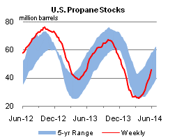

Released: June 4, 2014
Next Release: June 11, 2014
EIA forecast of U.S. crude oil production by quality through 2015
The U.S. Energy Information Administration (EIA) recently released a paper providing a short-term forecast of domestic crude oil production by type, supplementing the overall production forecast provided in the Short-Term Energy Outlook (STEO). Forecasts of production by crude type matter for several reasons. First, U.S. crude streams vary widely in quality. Second, the economics surrounding various options for the domestic use of additional domestic oil production are directly dependent on crude quality characteristics. Third, actual or potential export values also vary significantly with quality characteristics.
U.S. oil production has grown rapidly in recent years and has consisted primarily of lighter, sweet crude (a description of crude quality, as measured by API gravity and sulfur content) from tight resource formations. Roughly 96% of the 1.8-million-barrel per day (bbl/d) growth in production between 2011 and 2013 consisted of light sweet grades with API gravity of 40 or above and a low sulfur content of 0.3% or less.
Recent and forecast increases in domestic crude production have sparked discussion on how rising crude oil volumes will be absorbed into the market. Given the likelihood of continued growth in domestic crude production, and the recognition that some absorption options, such as like-for-like replacement of import streams, are inherently limited, the question of how a relaxation in current limitations on crude exports might affect domestic and international markets for both crude and products continues to hold great interest for policymakers, industry, and consumers. In response to multiple requests, EIA is developing analyses that shed light on this question.
{kind=link}
EIA analysis of current and forecast crude oil production indicates that U.S. supply of lighter API gravity crude will continue to outpace that of medium and heavier crudes (Figure 1). More than 60% of EIA’s forecast of production growth for 2014 and 2015 consists of sweet grades with API gravity of 40 or above.
EIA analyzes U.S. crude oil production according to seven regions (Figure 2) containing one or more hydrocarbon-producing geologic basins, and it categorizes domestic production into 11 crude types based on API gravity ranges and sulfur content (Table 1). Estimates of production of different crude types by region were developed using projections for the distribution of crude production from each region included in EIA’s Annual Energy Outlook in conjunction with the latest STEO forecast and available well-level data on production and API gravity for wells completed as recently as March 2014.
{kind=link}
{kind=link}
The production forecast analysis of crude oil characteristics provides a starting point for further analyses of the market outlook and the effects of a possible relaxation of existing restrictions on crude oil exports.
Retail gasoline prices higher, diesel fuel prices lower
The U.S. average retail gasoline price increased by almost two cents this week to reach $3.69 per gallon as of June 2, 2014, four cents more than the same time last year. Prices in the Midwest increased 6 cents to $3.71 per gallon, but are still 13 cents below prices a year ago. Prices in the Gulf Coast, West Coast, and Rocky Mountain regions all increased by less than a penny, to $3.44, $4.01, and $3.50 per gallon respectively. Prices on the East Coast fell one cent to settle at $3.65 per gallon.
The U.S. average diesel fuel price fell by less than a penny to $3.92 per gallon, five cents more than the same time last year. The Midwest and Gulf Coast led the decline, with both falling one cent, to $3.87 and $3.94 per gallon respectively. Prices fell by less than a penny on the East Coast to $4.01 per gallon, and on the West Coast, to $4.02 per gallon. Prices on the Gulf Coast remained unchanged at $3.78 per gallon.
Propane inventories continue to rise
U.S. propane stocks increased by 3.7 million barrels last week to 45.8 million barrels as of May 30, 2014, 1.3 million barrels (2.7%) lower than a year ago. Gulf Coast inventories increased by 2.0 million barrels and Midwest inventories increased by 1.3 million barrels. East Coast inventories increased by 0.3 million barrels and Rocky Mountain/ West Coast inventories increased by 0.2 million barrels. Propylene non-fuel-use inventories represented 8.8% of total propane inventories.
Text from the previous editions of This Week In Petroleum is accessible through a link at the top right-hand corner of this page.
| Retail Data | Change From Last | Retail Data | Change From Last | ||||
| 06/02/14 | Week | Year | 06/02/14 | Week | Year | ||
| Gasoline | 3.690 | Diesel Fuel | 3.918 | ||||
|
|||||||||||||||||||||||||||
| *Note: Crude Oil Price in Dollars per Barrel. | |||||||||||||||||||||||||||
|  | |||||||
| Stocks Data | Change From Last | Stocks Data | Change From Last | ||||
| 05/30/14 | Week | Year | 05/30/14 | Week | Year | ||
| Crude Oil | 389.5 | Distillate | 118.1 | ||||
| Gasoline | 211.8 | Propane | 45.775 | ||||